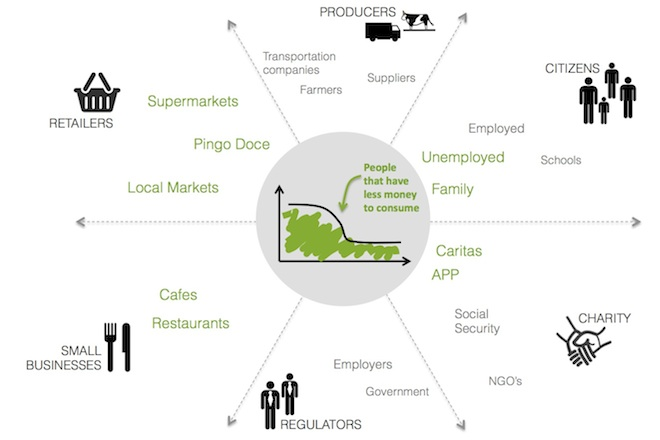
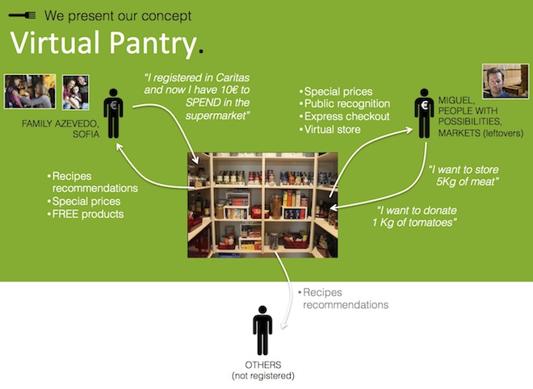
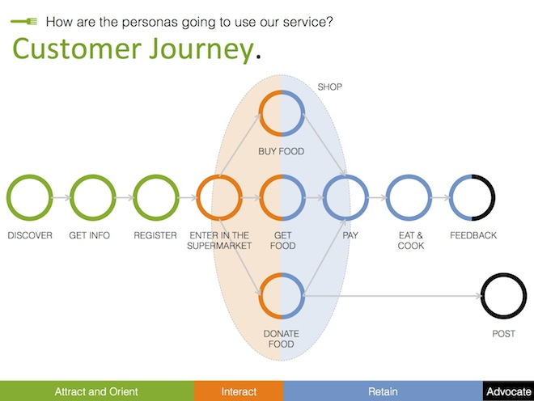
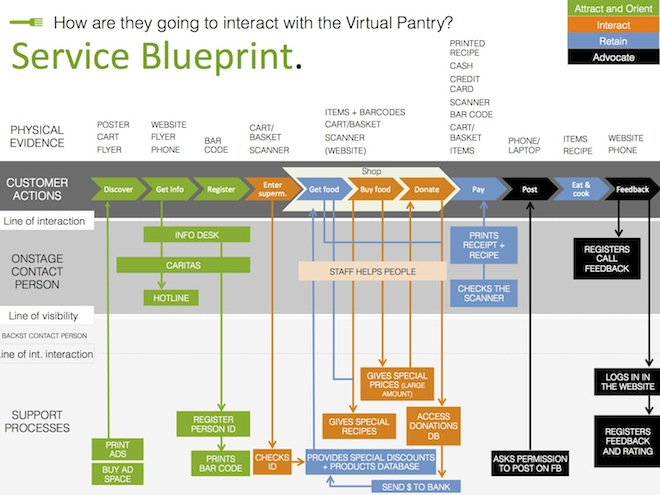
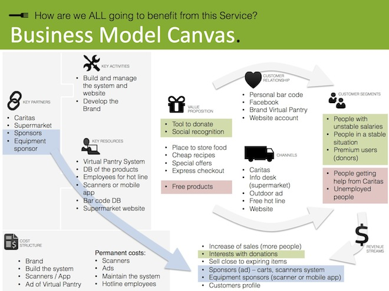

Virtual Pantry
This is a service that we designed as a team for the Service Design course project. My role was conducting research and ideation, and building the customer journey, the blueprint, and the business model. The project's focus is food consumption during the economic crisis in Europe. The below video is an enactment that shows our service being used through all the touchpoints.
We started by constructing a territory map and chose the focus of food consumption. Afterwards we created the stakeholders map to identify the people we want to interview. After our findings, we came up with personas and scenarios. The below picture is the stakeholders map.
After brainstorming, we settled on the concept of a virtual pantry. This is a service that lets people buy discounted items in bulk from the supermarket, and physically get them later. This is especially useful for fresh items. The picture below shows our concept.
The customer journey below highlights the touchpoints the customer goes throw, starting with attracting the customer and until the customer suggests the service to their surrounding.
The blueprint below connects the customer journey with onstage persons and backstage processes that are needed to support touchpoints.
The business model below shows the cost and revenue structures, and connects the entries with resources, activities, partners and customers. The project received positive reviews from fellow students and faculty, and was presented in local news stations.
